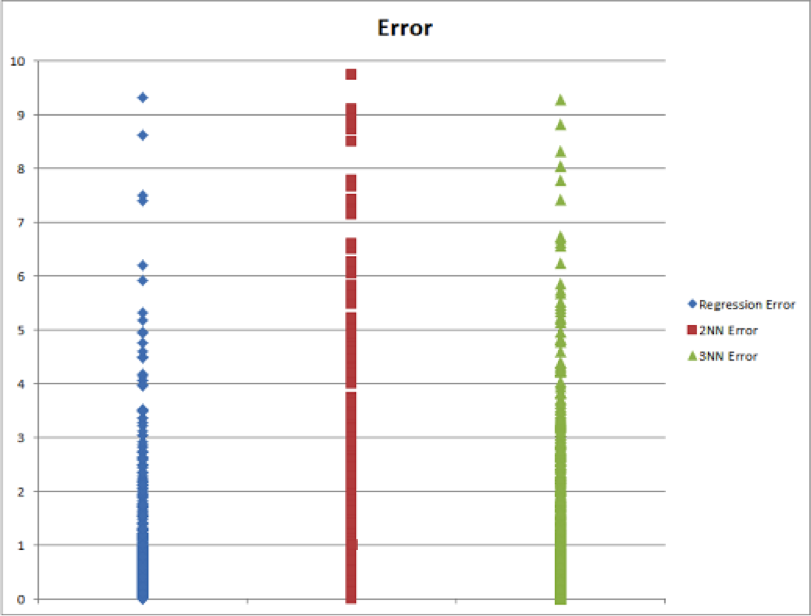

A Facebook status likes predictor for EECS 349 at Northwestern University.
Motivation Solution Testing and Training Key ResultsFacebook is one of the core ways people express themselves and share their lives. College students often post about their life events such as getting an internship or graduating, but on a day to day basis students often struggle to decide whether their thoughts are worth sharing. Will my friends "like" this status? Will they think it is annoying? Will they laugh? College students' social lives are measured by the judgement of others, and one simple scale is the number of likes that a status receives. Craving approval from their friends, a student may want to predict how popular a particular post would be in order to decide if it was worth sharing. Instead of impatiently waiting for the first few "likes" to appear on their status, the student could rest assured that their status would be popular among their friends.
We aimed to predict the number of likes a status would garner by creating a model with data pulled through Facebook’s Graph API and Facebook Query Language (FQL). We generated temporary tokens through Facebook’s Graph Explorer to grab the statuses of all of our friends to do our testing. The attributes we considered were:
To build our model, we tried both linear regression and nearest neighbor learning algorithms to test various combination of attributes.
We pulled a total of 49,216 statuses from around 700 users. This set was then divided into a 5,000 status set for later testing, and two 22,108 status sets; one half for training our dictionary to generate message score and the other half to train the learner. We measured success for various combinations of attributes and learning algorithms by the correlation indicated by Weka and the root mean squared error (RMSE). Naturally, we aimed for high correlations and low RMSEs.

We found that linear regression performed the best both in terms of RMSE and correlation. It also has the lowest actual error when results were taken out of the logarithmic form. Though massively better than our baseline measurement (ZeroR), all of our algorithms did not predict consistently accurate results on the test set. The most important attribute (that we are considered more detailed semantic approaches) seems to be the message score, followed by the average number of likes a user gets.